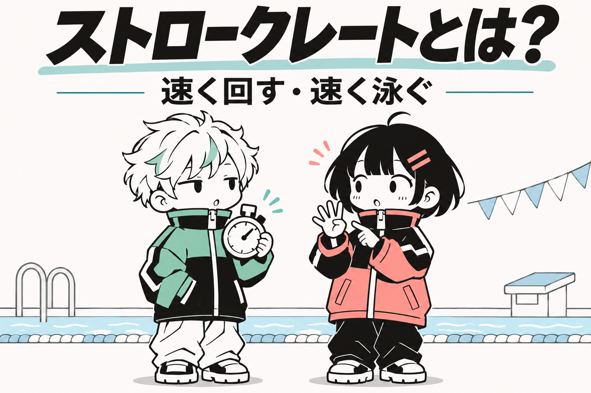
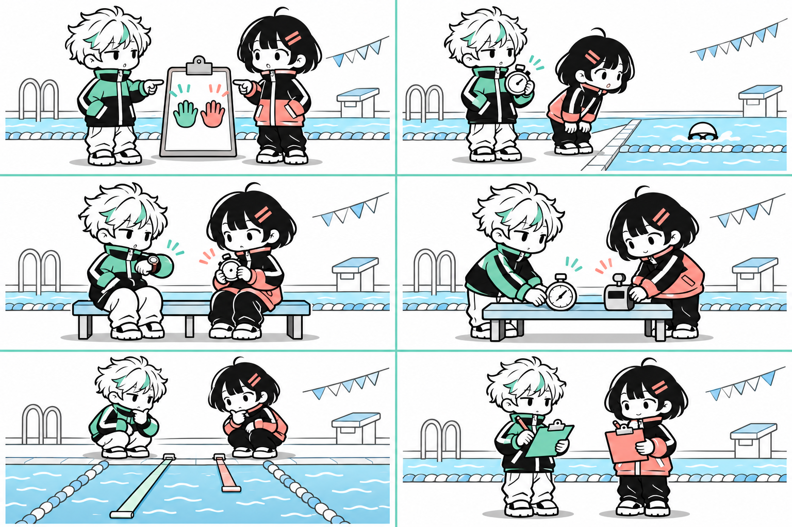

2026年11月26日 公開
ストロークレートとは？「速く回す」と「速く泳ぐ」を分けて見る

隣のレーンの人は、腕を忙しそうに回しているのに、自分とほぼ同じ場所を泳いでいる。プールサイドで時計を持つと、そんな違いが気になります。腕のテンポと、前へ進む速さ。今日は、この二つを別々に測ってから、どうつながるかを見ていきます。
この数字が教えてくれるのは、腕の動きを繰り返す速さです。進む速さそのものではありません。回すテンポが上がっても、1回で進む距離が短くなれば、泳ぐ速さは思ったほど上がらないことがあります。ここでいう「進む距離」は、手を伸ばした長さではなく、その間に身体が前へ移動した距離です。
まずはストップウォッチでそのテンポを計り、次に「速く回った」と「速く進んだ」を読み分けてみましょう。数字が増えたことを喜ぶ前に、その数字が何を数えているかをそろえるところから始めます。
「1回」が違うと、数字が2倍になる
クロールで右手が入水し、左手が入水し、また右手が入水する。この一巡を、この記事では「1周期」と呼びます。背泳ぎも片方の手の入水から、同じ手の次の入水までです。

「1回」の単位をそろえる
平泳ぎとバタフライは、両腕が同時に一巡して1周期。平泳ぎなら、両手が前に揃ったところから次に同じ形へ戻るまで、と目印を決められます。
ところが、クロールでは右も左もそれぞれ「1ストローク」と数える場合があります。この数え方なら、1分に40周期の泳ぎは、両腕合わせて80ストロークです。
さらにGarminの公式説明では、時計を着けた腕が一巡するたびに1ストロークと数えます。strokes/minやspmと書いてあっても、必ず左右合計とは限りません。比較の前に「何を1回と呼ぶか」を確かめてください。Garmin公式説明
40と80の違いは、泳ぎの違いではなく、数え方の違いかもしれません。ここからは「同じ腕が一巡して1周期」にそろえます。その一巡にかかる時間が分かれば、テンポを計れます。
3周期を計るなら、入水は4つ見る
ストップウォッチで計る場合、同じ動作を3周期続けるのにかかった秒数を使えます。研究でも3周期の計時が用いられています。Williamsら、2023年
0秒
開始②
2秒
1周期③
4秒
2周期④
6秒
停止
クロールなら、右手を目印にします。
- 右手が入水した瞬間に開始。ここは「0」です。
- 次の右手入水で1周期。
- その次の右手入水で2周期。
- さらに次の右手入水で3周期。ここで停止。
最初の入水を「1」と数えて、3つ目の入水で止めると、計ったのは2周期になります。数えるのは入水の個数ではなく、入水と入水の間です。
歩道の電柱を思い浮かべると、4本の電柱の間は3区間です。入水も同じで、開始の目印と終了の目印を含めると、区間より一つ多くなります。
説明用の仮例として、3周期が4.5秒だったとします。4.5秒を三つに分けると、1周期は1.5秒です。このテンポを1分間続けると何周期になるでしょう。60秒の中に1.5秒は40個入るので、40周期／分になります。
実際に1分間泳いで数えたわけではありません。選んだ短い区間のテンポを、比較しやすい「1分あたり」へ換算した数字です。計算をまとめるなら「180÷計った秒数」。ただし、この180を使えるのは3周期を計った時だけです。
壁を蹴った直後、ターン、ゴール前は、普段の水面の泳ぎと動きが違います。テンポを比べたい時は、壁から離れ、連続して泳いでいる区間を選びます。短い時間を手で計るので、押す瞬間のずれも入ります。小さな差を一度の測定で決めつけず、同じ条件で確かめます。
4つの入水の間に、3つの区間がある。 これで計る範囲が決まりました。それでも腕時計と数字が違うなら、泳ぎより先に表示の意味を比べましょう。
時計の数字と合わない時は、まず区間を見る
手計測で選んだ水面の数周期と、機器が平均している区間が違えば、数値が一致しないことがあります。壁を蹴ってから泳ぎ始めるまでを含むかなど、計算の範囲は機器の説明を確認します。1分あたりの回数、1秒あたりの周期数、1周期にかかる秒数も別の表示です。
速いほど「1周期の秒数」は小さくなる
先ほどの泳ぎは、40周期／分とも、1.5秒／周期とも書けます。前者は「1分に何回」、後者は「1回に何秒」です。同じ意味を、回数と時間という違う側から表しています。
回数の表示なら大きいほど速いテンポ、1回の秒数なら小さいほど速いテンポです。単位を省いて「前より数字が下がった」とだけ記録すると、テンポが遅くなったのか、速くなったのかも判断できなくなります。
同じ泳ぎでも、回数で示すか、1回の時間で示すかで数字は変わります。ここまでの数字はすべてテンポでした。次のSWOLFは、そもそも答えている問いが違います。
SWOLFは、テンポとは別の数字
SWOLFは、プール片道の秒数と、その片道のストローク数を足した値です。Garminもこの定義を採用しています。片道30秒、時計の数え方で15ストロークなら45です。ストロークレートのように「1分あたり」を表す数字ではありません。
合計45でも、下の例は5秒遅い
ここで別の仮例を考えます。片道30秒で15回なら45。35秒で10回でも45。同じSWOLFなのに、後者は5秒遅くなっています。
つまり、合計だけでは「速くなった」のか「回数を減らした」のかを区別できません。壁蹴り後に進む距離、プールの長さ、泳法、数え方も影響します。SWOLFを下げるために長く待って、目標より遅くなるなら、その数字だけでは目的を達成できていません。
同じ合計でも、中身は同じではありません。 速くなりたいなら、合計を下げることより実際のタイムを確かめる必要があります。では、テンポ自体を上げた場合はどうでしょう。
レートを上げれば速くなる、とは限らない
時計で30周期／分と出た一本を思い出してください。レートの数字から分かるのは、腕のテンポです。前へどれだけ進んだかを考えるには、同じ水面区間での「1周期で進んだ距離」がもう一つ必要です。
30周期／分
× 2.0 m／周期
60 m／分
40周期／分
× 1.5 m／周期
60 m／分
壁蹴りなどを除いた水面の泳ぎは、「1秒に何周期か」×「1周期で何メートル進むか」で平均の速さを考えられます。
歩く時も、足を出す回数だけでは進む速さが決まらず、一歩でどこまで進むかが関わります。水泳でも「繰り返す回数」と「その一巡で身体が進む距離」を一緒に見ると、忙しい泳ぎが必ずしも速くない理由を説明できます。
式だけではつかみにくいので、同じ10秒間を並べた仮例に置き換えます。
- A：5周期で、一巡ごとに2m進む。10秒で合計10m。
- B：6周期で、一巡ごとに1.5m進む。10秒で合計9m。
同じ10秒で、何回まわして、何m進んだ？
説明用の仮例。両方とも10秒間。
A：10秒間で5周期
1周期で2m × 5周期 ＝ 10m
B：10秒間で6周期
1周期で1.5m × 6周期 ＝ 9m
一つの区切りは1周期で進む距離。Bは区切りが多くても、一つが短いため、合計の前進も短い。
Bの方が一巡多く回しています。それでも、一巡ごとの前進が短くなったため、同じ10秒で進んだ距離はAより短い。これが「腕は忙しいのに、前へ進む速さは落ちる」の中身です。数値は仕組みの説明用で、目標の回数や距離ではありません。逆に、テンポを上げても一巡の前進が十分に保たれれば、速さは上がります。テンポを上げること自体を悪いと判定する話でもありません。
2025年に公表された研究は、2019年の欧州短水路選手権に出場した女子154人・男子170人のクロールを分析しています。レートと1周期の距離の組み合わせは、種目の距離やレース中の位置によって異なりました。一律のレートを全員の正解にはできません。これは大会映像の観察研究で、初心者に特定のレートを教える実験ではありません。Stauntonら、2025年
テンポを指定する道具を使えば、その問題が自動的に解決するわけでもありません。米国の大学女子競泳選手15人を対象に、音でテンポを知らせる機器を使う8人と、使わない7人を比べた研究では、機器を外した直後までのテンポの変化に、群による明確な違いは認められませんでした。測ったのは腕の周期の時間などで、レースの自己ベストの改善ではありません。Williamsら、2023年
この二つは、テンポを考える際の別々の問いに答えています。大会の観察は「どんな組み合わせで速く泳いでいたか」、音の実験は「テンポを合わせる練習の直後に何が残ったか」です。後者で群の違いが明確でなかったことは、道具の効果が完全にゼロという証明でもありません。
全員に共通する数字を選ぶことと、その数字で泳げるようにすることは、別の問題です。どちらの研究も、初心者が目指すべき一つのレートを渡してくれるわけではありません。そこで、自分の記録ではレートとタイムを一緒に見る必要があります。
テンポを変えたら、速さと楽さはどう変わる？
この記事での応用案は、普段のテンポと少し変えたテンポを、無理のない同じ短い距離で比べること。十分休み、レート、タイム、苦しさを一緒に見ます。子どもの計時は指導者が行い、本人には一度に多くの数字を追わせません。
テンポを変えたら三つ見る
説明用の模式図
- 1普段を計る
- 2休んで少し変える
- 3タイムと呼吸も見る
レートが上がってタイムもよくなり、姿勢や呼吸を保てるなら、そのテンポは試す候補になります。回数だけ増えて速くならないなら、さらに回す前に、水を押す動き、タイミング、姿勢や呼吸がどう変わったかを確認します。
最後に、数字の読み方を仮の記録で確かめましょう。壁蹴りを含まない同じ10mを計り、Aはレート40周期／分で10秒、Bは44周期／分で11秒だったとします。
Bは腕の一巡を速く繰り返していますが、10mにかかった時間は長くなっています。「速く回せた」は言えても、「速く泳げた」は言えません。回数だけをさらに増やす前に、速さが落ちた時の姿勢や呼吸、手の動きを見直す方へ、問いを変えられます。この記録だけで、原因がどの動作かまでは決まりません。
短い距離でよくても、長い距離に合うとは限りません。その続きを四泳法は距離でどう変える？で扱います。
記録に「44」とだけ残す代わりに、「同じ10mで、回すテンポは上がったが到着は遅くなった」と書いてみる。すると次の問いは、「もっと回すべきか」から「一巡の前進がどこで変わったか」へ変わります。レートが役立つのは、数字に従わせる時ではなく、見えていなかった変化を言葉にする時です。
参考資料
- Garmin D2 Mach 2説明書：Swim Terminology本文。
- Williams et al. (2023), The Influence of Auditory Cueing on Stroke Rate in Elite Swimmers：原著PDFの方法・結果を確認。短時間の機器実験であり、長期効果・初心者への効果は未検証。
- Staunton et al. (2025), DOI: 10.3389/fspor.2025.1656633：方法・結果・本文を確認。